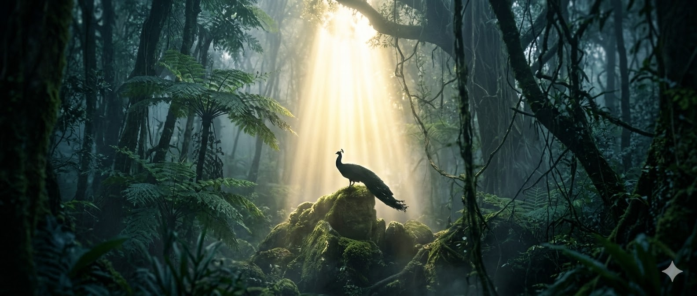
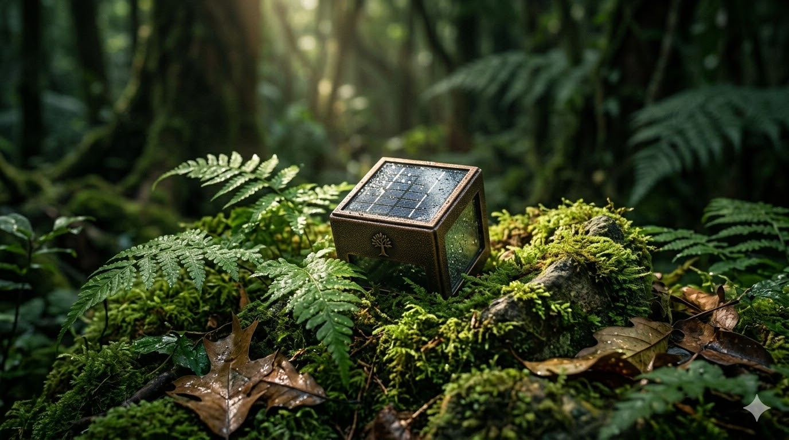

nature_people第一部分：核心使命
terrain棲地微縮工程：還原生命的原始座標
在森光動物園，我們拒絕傳統的展示框架。透過土壤力學與植被演替研究，我們在園區內精準複製了台灣中高海拔的原始林相。這不只是視覺上的模擬，更是為了讓動物能在最熟悉的濕度、氣溫與氣味中生活。
pets物種復育方舟：延續瀕危生命的族群火種
我們扮演著生物多樣性的最後防線。透過與國際動物園組織的基因交換計畫，森光動物園針對石虎、台灣雲豹及多種特有種鳥類建立了科學化的育種系統，承載著重返山林、繁衍族群的終極使命。
menu_book沉浸式生態教育：在自然中學會生命課題
我們深信，知識的傳遞應伴隨著情感的觸動。園區內的「森林走廊」讓遊客能以不干擾的方式，近距離觀察生態鏈的運作。透過保育員的現場解說與互動演示，將枯燥的課本知識轉化為一場場關於共生的生命教育。
apartment低衝擊建築美學：隱匿於林間的永續設施
森光動物園的建築結構設計遵循「環境優先」原則。我們採用耐候性極佳的燒杉材料與回收鋼構，讓人工設施完美隱入光影之間，降低建築對周遭生態系統的熱島效應，成為景觀中和諧的一部分。
biotech數位守護監測：以尖端科技優化照護品質
科技是我們照護生命的隱形雙手。全區覆蓋的感測器 24 小時紀錄動物的活動頻率與心理狀態。這套數據系統讓我們能第一時間預判動物健康風險，我們用最嚴謹的科學數據，支撐起最感性的守護工作。
recycling零污染資源循環：實踐森林內的循環經濟
我們力求將對環境的負擔降至最低。園區內的有機廢棄物透過專業系統轉化為生質能與有機肥料，回饋給園內原生植物區。我們致力於打造封閉式的循環鏈，示範如何在營運場域的同時達成資源效率最大化。
electric_car低碳足跡旅程：引領責任旅遊的新標準
從抵達那一刻起，綠色思維就已啟動。我們提供全電動接駁巴士與數位票務，鼓勵遊客利用補水站。透過優化動線與智慧系統，大幅減少不必要的能源消耗，讓每一位訪客在洗滌心靈的同時，也實踐低碳價值。
groups在地共生網絡：串聯部落與農民的綠色經濟
動物園與地方繁榮息息相關。我們優先採購鄰近農友的有機蔬果作為飼糧，並聘僱在地住民參與導覽。這份夥伴關係不僅活絡了在地產業，更讓森光動物園成為社區的榮耀，共同編織守護家鄉自然資源的安全網。
diversity_3全感應生物廊道：織補破碎的森林生命鏈
除了保護區，我們更致力於修復周邊生態連通性。透過設立生態過廊，鼓勵野生的小型哺乳類與昆蟲安全穿梭。這項計畫旨在解決棲地碎片化問題，讓動物園成為開放的生態節點，協助在地物種擴散與交流。
auto_awesome未來願景承諾：照亮人與自然和解的道路
我們的目標是成為全球生態營運典範。我們承諾在 2030 年達成完全碳中和營運，並輸出復育經驗。這是一場漫長的馬拉松，我們邀請您與我們同行，見證生命回歸森林，迎接人與自然共榮的嶄新時代。
energy_savings_leaf第二部分：永續行動

filter_hdr1. 綠能循環
森光動物園全區採用綠建築標準，整合太陽能發電與雨水回收系統，實踐碳中和營運承諾。我們相信能源的永續利用是保護森林的第一步，讓每一度電都來自大自然的饋贈。
filter_hdr2. 野放計畫
復育是為了讓生命回歸自由。我們與專業團隊協作，每年固定將復育成效優異的個體送回野外棲地。透過精準的追蹤監測，確保牠們能在原生家園中茁壯成長。
filter_hdr3. 在地共榮
我們與鄰近部落簽署契作協議，採購新鮮有機農產供應園區。透過縮短食物里程，支持在地友善農業，創造動物、農民與環境三方共贏的綠色經濟網絡。
filter_hdr4. 教育傳承
定期舉辦生態講堂與環境探索營，啟發下一代對自然科學的興趣。我們將知識化為種子，播撒在孩子心中，期盼未來的地球能由具備保育意識的守護者們傳承下去。